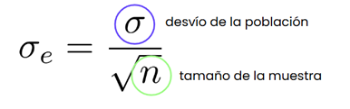
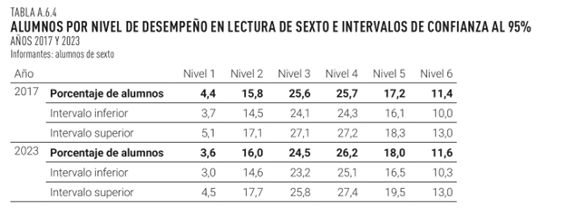
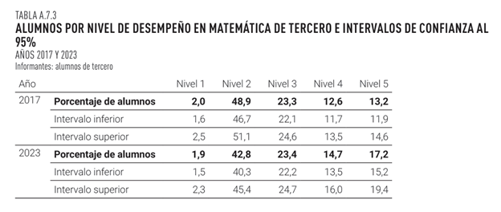
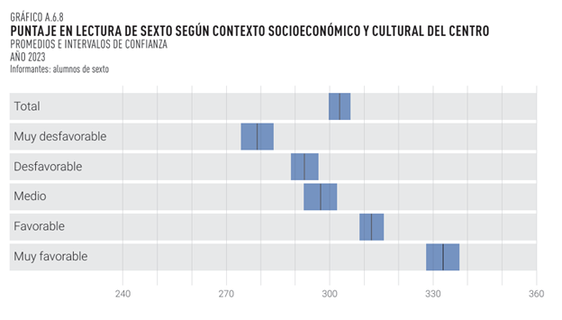
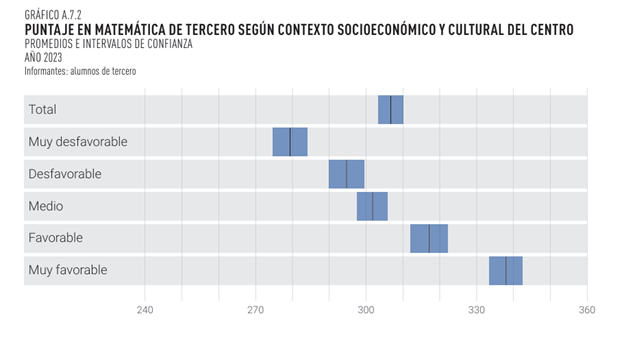
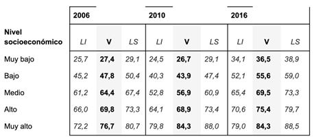
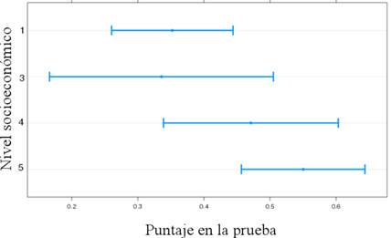

Intervalo de confianza y Error estándar (S10)
Lectura asociada
Capítulo 5. Probabilidad, muestreo y estimación
Contenidos
Media muestral (X̄) y desvío muestral (S)
Distribución muestral de la media
Estimación de la media poblacional (μ -mu-), error estándar (σe -sigma-)
Intervalo de confianza (IC)
10.1 Lección interactiva: Muestreo
A partir de la lectura (Sección 5.12. del libro) y videos asignados a esta semana, define y diferencia los siguientes conceptos: población, muestra, parámetro y estadístico
Intercambia con tu subgrupo al respecto
Desplegar luego de responder
Cuando investigamos sobre una temática, en general no es posible acceder a todos los casos de interés (población). Generalmente solo vamos a tener la capacidad de observar algunos casos (una muestra) y necesitamos algunas herramientas que nos permitan manejar la incertidumbre que conlleva trabajar con muestras.
El hecho de tener que trabajar con muestras en lugar de poblaciones obliga a recurrir a la inferencia y a tener que establecer una regla de decisión en términos de probabilidad.
Requiere entender cómo se comportan las muestras cuando se extraen de distribuciones (definidas por la teoría de la probabilidad…).
Explora la Lección interactiva (Muestreo) y contrasta tus definiciones con las ofrecidas al final de la lección
Sitúa los cuatro conceptos en el marco de la base de datos con la que estás trabajando en el Entregable.
En la lección, activa la simulación con los controles que vienen por defecto: muestra n = 10, número de muestras = 100, velocidad normal)
¿Qué variable se está midiendo?
¿Qué representa cada uno de los 3 gráficos?
¿Qué representa la línea roja? ¿La azul? ¿Y la verde?
Una vez que la simulación termine, observa el gráfico de la distribución muestral de la media.
Ahora aumenta el tamaño de la muestra a n = 25, observa el gráfico de la distribución muestral de la media y nota diferencias respecto al que obtuviste cuando la muestra era n = 10.
Entonces ¿Qué es el error estándar de la media? ¿Cuál es la relación entre éste y el tamaño de la muestra?
10.2 Lección interactiva: Intervalo de confianza
Observa la animación ofrecida en la Lección interactiva (Intervalo de confianza), especialmente el gráfico de Intervalos de confianza.
¿Qué representan los intervalos verdes?
¿Qué representan los intervalos rojos?
Para un nivel de confianza del 95 %, si repetimos el muestreo suficientes veces, ¿cuántos intervalos esperamos que contengan a la media poblacional?
Compara los intervalos cuando el nivel de confianza es 90 % vs cuando es 99 %
- Observa: ¿Qué sucede con el ancho del intervalo cuando exijo un mayor nivel de confianza?
Realiza distintos intentos variando el tamaño de la muestra:
- Observa: ¿Qué sucede con el ancho del intervalo cuando aumento el tamaño de la muestra?
Intenta responder las siguientes preguntas, a modo de puesta a punto:
¿Cómo se construye un intervalo de confianza? ¿Qué aspectos dependen de la muestra y qué aspectos son una elección?
Construyendo un intervalo de confianza de ancho 1 error estándar ¿Qué porcentaje de las veces el intervalo contendrá a la media poblacional? ¿Es suficiente?
Construyendo un intervalo de confianza de ancho 2 errores estándar (en realidad 1,96) ¿Qué porcentaje de las veces el intervalo contendrá a la media poblacional? ¿Es suficiente?
10.3 Construyendo Intervalos de confianza
¿Cómo podemos estimar en qué rango se encuentra la media poblacional de riesgo en salud mental de cuidadores adultos de niños de hasta 56 meses en Uruguay?
- Construye un intervalo de confianza del 95 % para la variable Riesgo en salud mental de la ENDIS, si la muestra es N = 2566. Intenta recordar los otros elementos que necesitas para construirlo.
¿Necesitas ayuda?
En otras palabras, nos están pidiendo que una vez definido un nivel de confianza (en este caso 95 %), calculemos el correspondiente intervalo de confianza.
A partir del video y la lectura del capítulo intenta recordar: ¿De qué depende el ancho del intervalo de confianza?
¿Necesitas algo más de ayuda?
Para calcular el intervalo de confianza necesitas calcular el error estándar. Aquí una ayuda:

Ahora que ya calculaste el intervalo de confianza, ¿Hay alguna herramienta del panel que te permita observar los intervalos de confianza sin calcularlos a mano?
Realiza el análisis utilizando el menú desplegable que corresponda y contrasta el intervalo que calculaste con el que te ofrece el panel.
Entonces, ¿En qué rango de puntuación sería esperable encontrar la media poblacional, con un nivel de confianza del 95 %?
10.4 Aplicaciones de los Intervalos de confianza
Bien, pero ¿para qué nos sirve construir intervalos de confianza?
Imagina que queremos analizar si, en la población, existen diferencias en el riesgo en salud mental del cuidador principal comparando grupos de niños que presentan distintos niveles de conducta agresiva (clasificados como Normal, Riesgo y Clínico).
Ingresa al Panel de análisis de datos, base ENDIS, desplegable Intervalos de confianza (Variable 1: SRQ20: riesgo salud mental, Variable 2: agresiva)
A partir de la observación del gráfico, ¿Es más probable que los grupos (Normal, Riesgo y Clínico) tengan la misma media poblacional de riesgo en salud mental del cuidador o medias significativamente distintas? ¿Qué observaste para responder esta pregunta?
¿Qué podría explicar que el intervalo de confianza para el nivel Clínico sea así de amplio?
¿Necesitas ayuda?
Intenta recordar: El intervalo de confianza depende del nivel de confianza y del error estándar. Y el error estándar ¿De qué depende?
- Repite el ejercicio con variables de interés para tu Entregable.
10.5 IC: Desempeños en lectura y matemáticas en 3er año de Ed. Primaria en Uruguay (Aristas)
Como vimos en los videos de esta semana, los intervalos de confianza pueden verse representados en gráficos y tablas. Los siguientes son ejemplos extraídos del informe Aristas 2023 (INEEd, 2025) y refieren a los desempeños en lectura y matemática de los estudiantes de 3er año de Educación Primaria en nuestro país.

¿Qué porcentaje de escolares estaban categorizados en el Nivel 1 de desempeño en lectura en la muestra en 2017? ¿Qué puedes decir sobre el porcentaje de niños en Nivel 1 de desempeño en lectura en la población? Intenta redactar estos resultados.
Si observamos las muestras 2017 y 2023, el porcentaje de niños categorizados en nivel 1 de desempeño cambió de 4,4 en 2017 a 3,6 en 2023. Observando los respectivos intervalos de confianza ¿qué podemos inferir respecto al cambio en la población?
Intenta repetir el ejercicio para los otros niveles de desempeño en lectura (2 al 6).
Ahora, de la misma manera, examina el caso de matemáticas

Ahora miremos los desempeños según contexto socioeconómico y cultural del centro, esta vez representando los intervalos de confianza en forma gráfica. Interpreta cada gráfico.


En el informe se incluyen varios ejemplos más: comparaciones según tipo de escuela (Privada, Urbana común, Tiempo Completo, etc.), género, región, etc. Te invitamos a consultarlo aquí informe Aristas 2023 (pags. 390 - 402).
10.6 Otro ejercicio interactivo: Teorema Central del Límite
Utilizando la web https://www.esci-dances.thenewstatistics.com/ vamos a comprobar que independientemente de la forma que tenga una distribución poblacional, la distribución muestral de la media tiene distribución normal.
Compara la distribución de las medias muestrales (N=100) obtenidas a partir de una población con distribución normal (media=50, desviación estándar=20) con la obtenida a partir de una población con distribución uniforme (media=50, desviación estándar=20).
Realiza lo mismo que antes pero ahora utilizando muestras más pequeñas, por ejemplo, N=10. ¿Qué ocurre con la distribución muestral de la media?
10.7 Y para terminar, un par de ejercicios múltiple opción, como los del parcial
Acerca de los intervalos de confianza:
Son estimaciones puntuales de un parámetro desconocido con cierto nivel de confianza.
Pueden usarse en variables tanto categóricas como numéricas.
Permiten estimar un intervalo de valores dentro del cual puede encontrarse el parámetro poblacional, con cierto nivel de confianza.
Permiten estimar con exactitud el valor del parámetro poblacional.
Con respecto a los intervalos de confianza:
Al aumentar el nivel de confianza, disminuye el tamaño del intervalo.
Al aumentar el nivel de confianza, disminuye el error muestral.
Al aumentar el tamaño de la muestra, aumenta el tamaño del intervalo.
A igual nivel de confianza, su tamaño disminuye al aumentar el tamaño de la muestra.
En un informe del Instituto Nacional de Evaluación Educativa, figura la siguiente tabla en donde se muestra la Tasa de Egreso Oportuno de la Educación Media Básica (TEO-EMB) de jóvenes entre 15 y 16 años, desagregada según nivel socioeconómico (NSE), para los años 2006, 2010 y 2016. En cada cruce, se muestra el valor estimado (V), y el límite inferior (LI) y superior (LS) del intervalo de confianza respectivo.
A partir de esta tabla, ¿qué afirmaciones pueden realizarse?

La TEO-EMB para el nivel “muy bajo” disminuyó entre 2006 y 2010.
La TEO-EMB para el nivel “muy bajo” aumentó entre 2010 y 2016.
No hay diferencias en TEO-EMB entre 2006 y 2010 para el nivel “medio”.
Hay diferencias en TEO-EMB entre 2010 y 2016 para el nivel “muy alto”.
La distribución muestral de la media:
Informa sobre la frecuencia de los distintos niveles de la variable en la población.
Es una distribución empírica que permite identificar el nivel de error en cada muestra.
Es una distribución cuya media es la media poblacional, y el desvío aumenta con el tamaño de la muestra.
Es una distribución teórica que informa sobre la frecuencia de los diferentes valores de media de las diferentes muestras posibles.
En un estudio se realizaron pruebas de matemática a estudiantes de primaria, de diferentes niveles socioeconómicos. En la siguiente gráfica se muestran los intervalos de confianza al 95% para las medias de los puntajes, según el nivel socioeconómico.

En base a esta gráfica, indique qué afirmación puede realizarse.
Los puntajes para el nivel 3 son significativamente más bajos que para el nivel 4.
Los puntajes para el nivel 1 son significativamente más bajos que para el nivel 5.
Los puntajes para el nivel 1 son significativamente más bajos que para el nivel 3.
Los puntajes para el nivel 1 son significativamente más altos que para el nivel 3
Acerca de los intervalos de confianza para la media:
Permiten identificar el valor exacto de la media poblacional a partir de la estimación muestral.
Permiten estimar cuál es el valor de la media poblacional más probable, dada la estimación muestral.
Permiten estimar un rango de valores en el que puede, con un cierto nivel de confianza, encontrarse la media poblacional.
Permiten estimar un rango de valores en el que puede, con un cierto nivel de confianza, encontrarse la media muestral.